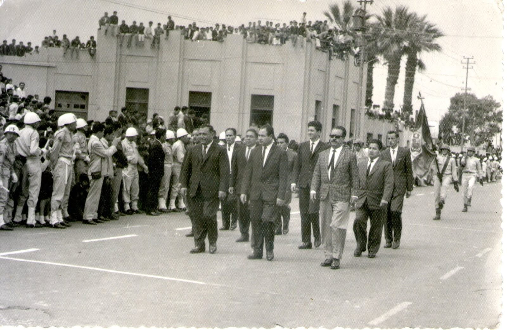
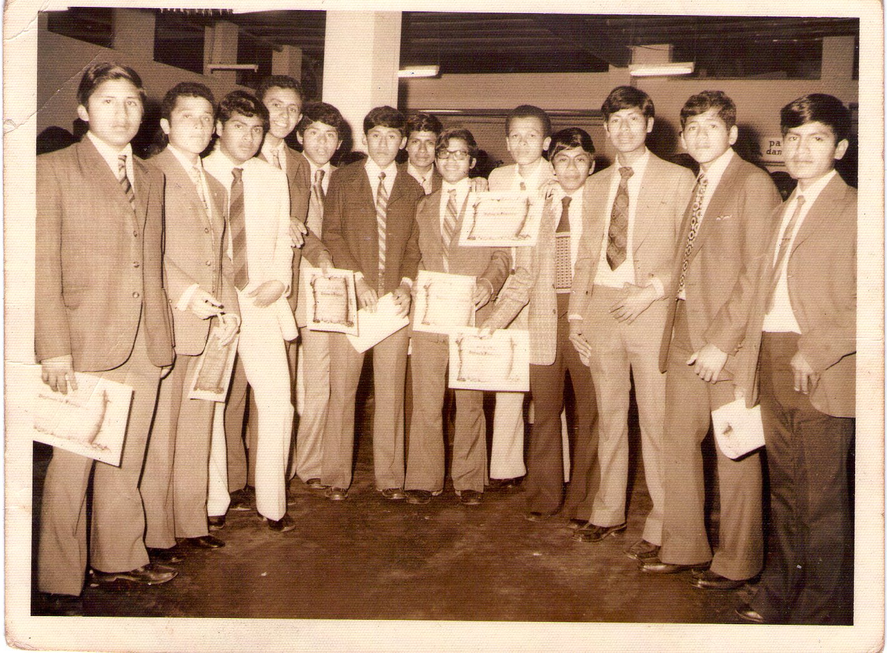
Los orígenes del colegio
La creación de la institución fue impulsada por ciudadanos de Cañete interesados en ampliar las oportunidades de educación secundaria en la provincia.
Entre los principales promotores aparece el abogado Dr. Francisco Javier Hurtado Laos, acompañado por el sacerdote Pedro Hurtado Mora y otros miembros de la familia Hurtado Laos.
El colegio comenzó sus actividades en un modesto local ubicado en la esquina de las calles Sepúlveda y Alfonso Ugarte, en San Vicente de Cañete.
En sus primeros años contó con las secciones Común y Comercial, a las que posteriormente se agregó la enseñanza primaria.
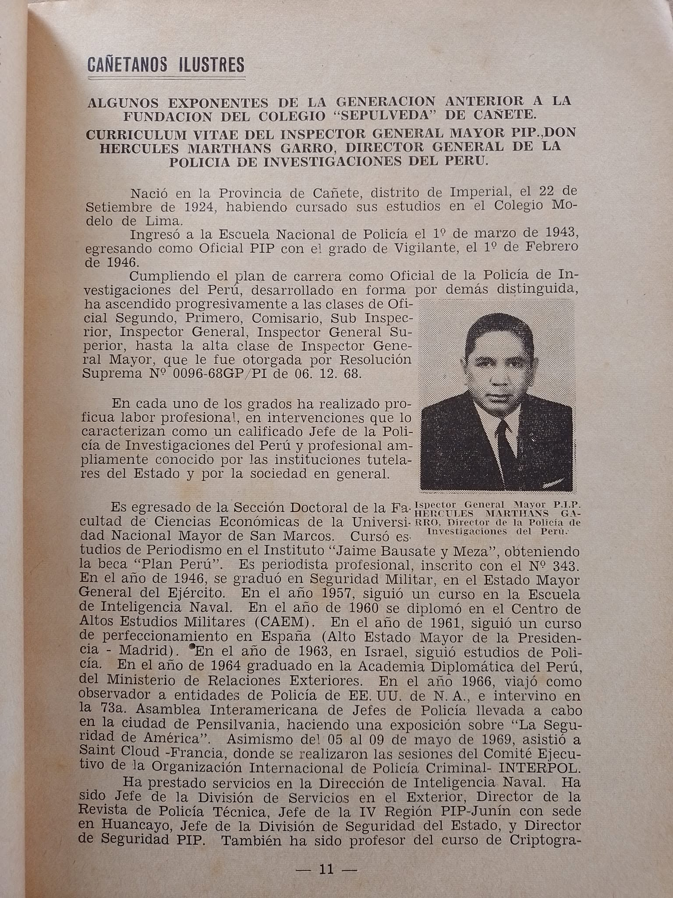
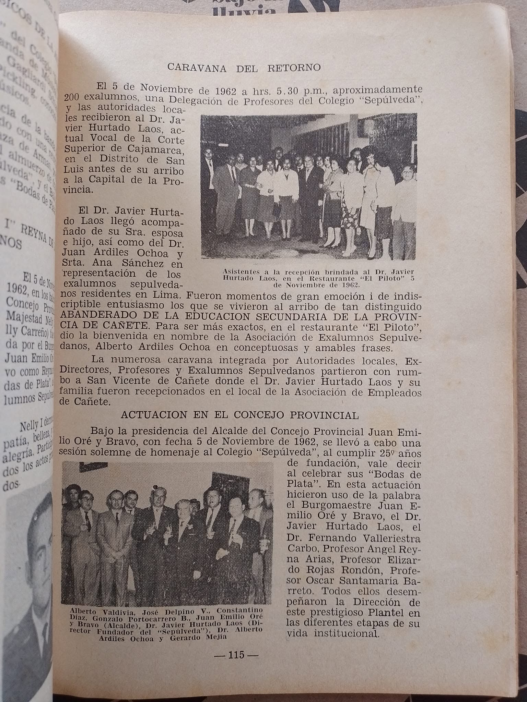
Reconocimiento oficial
El 10 de marzo de 1939, la institución recibió reconocimiento oficial mediante la Resolución Ministerial N.º 2430.
La reseña histórica señala que en ese momento el colegio contaba aproximadamente con 40 alumnos.
Este reconocimiento permitió consolidar oficialmente la presencia de la institución educativa dentro del sistema educativo de aquellos años.
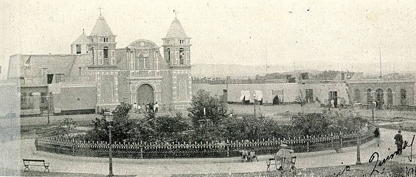
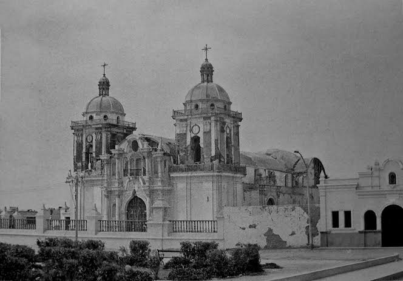
El proceso de municipalización
Durante sus primeros años, el colegio dependía principalmente de las pensiones pagadas por los estudiantes, situación que generó dificultades para mantener su funcionamiento.
En 1945, en el contexto de las políticas de gratuidad de la enseñanza, se impulsó la municipalización del colegio.
En 1946, la municipalidad destinó recursos para contribuir al sostenimiento de la institución.
Según la reseña histórica, este proceso permitió que se pudiera impartir enseñanza gratuita a estudiantes de Cañete.
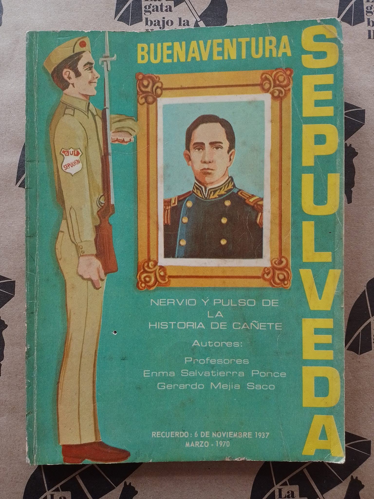
Fernando Valle Riestra Carbo
En 1947 asumió la dirección el abogado Fernando Valle Riestra Carbo, quien llevaba varios años establecido en Cañete.
La reseña histórica institucional le atribuye un papel importante en las gestiones que posteriormente condujeron a la nacionalización del colegio.
Esta etapa representa un periodo de transformación en la historia de la institución y antecede a su incorporación definitiva al sistema público.

Nuevas iniciativas educativas
El 25 de marzo de 1961, con la intervención de la Asociación de Empleados de Cañete y un grupo de profesores, se creó una Sección Vespertina Cooperativa Mixta.
Este acontecimiento ocurrió apenas un año antes de la nacionalización del colegio y forma parte del proceso de expansión de sus servicios educativos.
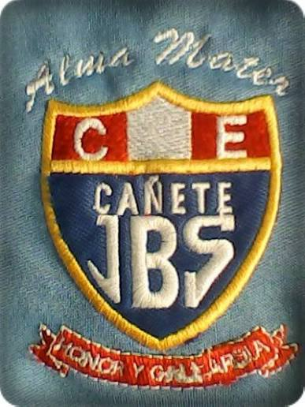
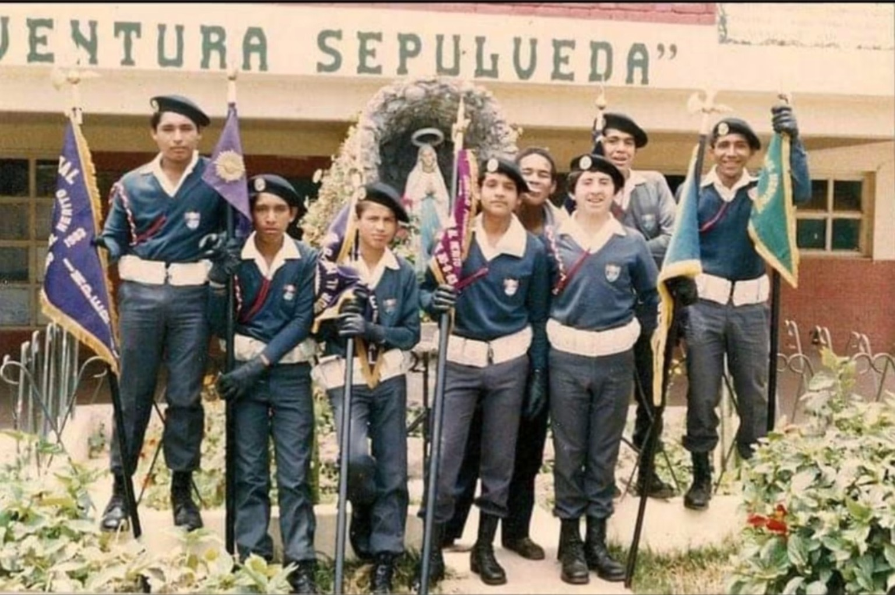
La nacionalización del colegio
El 25 de marzo de 1962, mediante la Ley N.º 11796, el colegio fue nacionalizado.
Este acontecimiento constituye uno de los momentos más importantes de su historia, porque significó el paso de una institución que había comenzado como particular hacia el sistema educativo público.
De esta manera, el colegio pasó a tener una nueva condición institucional y continuó desarrollando su labor educativa al servicio de los estudiantes de Cañete.
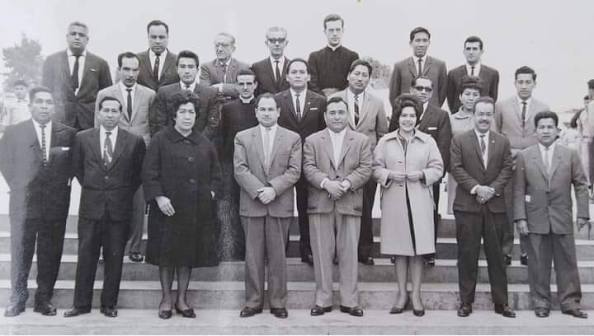
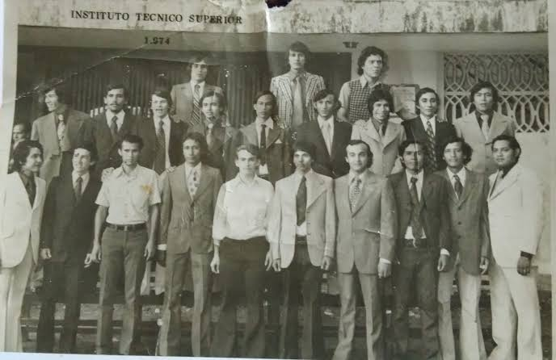
Gran Unidad Escolar
El 18 de marzo de 1964, mediante la Ley N.º 14974, el Colegio Nacional Sepúlveda pasó a convertirse en Gran Unidad Escolar (GUE).
La nueva organización integró al Instituto Industrial N.º 54 y a la Escuela Primaria de Varones N.º 5411.
Esta etapa ayuda a comprender la posterior importancia de la formación técnica dentro de la identidad institucional del colegio.
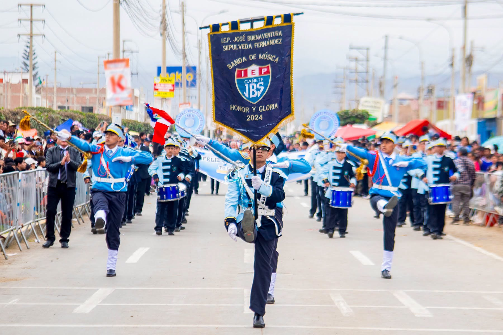
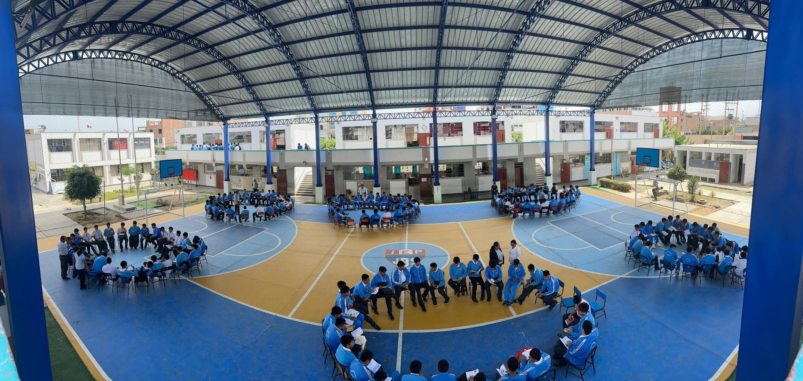
La memoria continúa
Desde sus inicios como colegio particular en 1937, la institución ha atravesado diferentes etapas y transformaciones.
Su historia está vinculada a la educación de varias generaciones de estudiantes de Cañete y al desarrollo de una identidad institucional que ha evolucionado con el paso del tiempo.
La memoria de quienes estudiaron, enseñaron y trabajaron en el colegio forma parte del patrimonio histórico de la comunidad educativa.